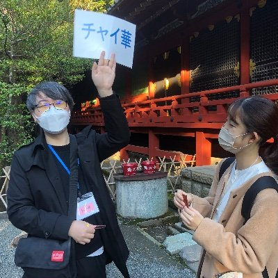

Aoi M
@aoim33
RT @chaika_jcfa: 【🇯🇵参加者募集🇨🇳】
「私の沼ってるコトやモノ」発表交流会
日時:3月14日（土）14:00-15:20
場所: zoom
参加者: ＃日中友好 に興味がある方（先着順20名）
参加費: 無料
申込：…

神奈川県日中友好協会 青年学生部会（チャイ華）
@chaika_jcfa
【🇯🇵参加者募集🇨🇳】
「私の沼ってるコトやモノ」発表交流会
日時:3月14日（土）14:00-15:20
場所: zoom
参加者: ＃日中友好 に興味がある方（先着順20名）
参加費: 無料
申込：https://t.co/Rx0s30QRMr
日中の青年が発表します😊お気軽にご参加下さい‼️
＃神奈川県 ＃上海 ＃中国 ＃国際交流 https://t.co/oKNPvwSeMh